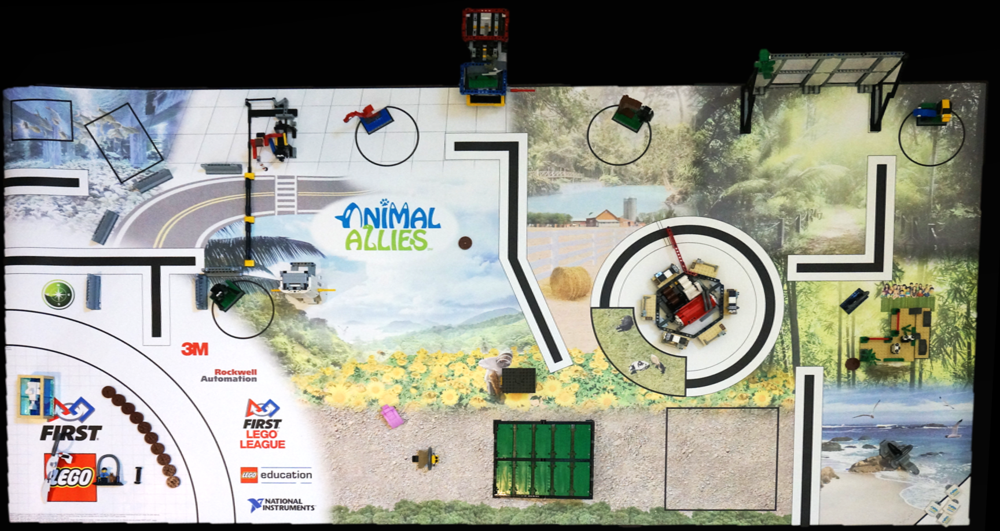

<link rel="icon" type="image/vnd.microsoft.icon"  href="./demo/img/favicon.ico" />

<link rel="Stylesheet" type="text/css" href="./demo/demo.css" />
<script type="text/javascript" src="./js/jquery-1.11.3.min.js"></script>
<!-- fileend -->
<a rel="external" href="../">
  
</a>

<!-- headstart -->

<!--<div style="right: 5px; position:fixed; top: 5px; z-index: -1000">
  <a target="_blank" href="https://play.google.com/store/apps/details?id=com.ev3lessons.ev3lessons.trashtrekscorer">
    
  </a>
</div>-->

<!--<a id="canvasImg" download="myEV3LessonsSketch.png" href="#" onclick="
/*var canvas = document.getElementById('wPaint-canvas');
var context = canvas.getContext('2d');

draw cloud
context.beginPath();
context.moveTo(170, 80);
context.bezierCurveTo(130, 100, 130, 150, 230, 150);
context.bezierCurveTo(250, 180, 320, 180, 340, 150);
context.bezierCurveTo(420, 150, 420, 120, 390, 100);
context.bezierCurveTo(430, 40, 370, 30, 340, 50);
context.bezierCurveTo(320, 5, 250, 20, 250, 50);
context.bezierCurveTo(200, 5, 150, 20, 170, 80);
context.closePath();
context.lineWidth = 5;
context.fillStyle = '#8ED6FF';
context.fill();
context.strokeStyle = '#0000ff';
context.stroke();

// save canvas image as data url (png format by default)
var dataURL = canvas.toDataURL();

// set canvasImg image src to dataURL
// so it can be saved as an image
document.getElementById('canvasImg').href = dataURL;
//download:dataURL;*/">Show
drawing as picture</a>-->
<div class="content-box">
  <!-- JavaScripts-->
  <!-- jQuery UI -->
  <script type="text/javascript" src="./lib/jquery.ui.core.1.10.3.min.js"></script>
  <script type="text/javascript" src="./lib/jquery.ui.widget.1.10.3.min.js"></script>
  <script type="text/javascript" src="./lib/jquery.ui.mouse.1.10.3.min.js"></script>
  <script type="text/javascript" src="./lib/jquery.ui.draggable.1.10.3.min.js"></script>

  <!-- wColorPicker -->
  <link rel="Stylesheet" type="text/css" href="./lib/wColorPicker.min.css" />
  <script type="text/javascript" src="./lib/wColorPicker.min.js"></script>
  <!-- wPaint -->
  <link rel="Stylesheet" type="text/css" href="./wPaint.min.css" />
  <script type="text/javascript" src="./wPaint.min.js"></script>
  <script type="text/javascript" src="./plugins/main/wPaint.menu.main.min.js"></script>
  <script type="text/javascript" src="./plugins/text/wPaint.menu.text.min.js"></script>
  <script type="text/javascript" src="./plugins/shapes/wPaint.menu.main.shapes.min.js"></script>
  <script type="text/javascript" src="./plugins/file/wPaint.menu.main.file.min.js"></script>


  <style>
  input{position:absolute; top:-100px;}
  #container {
    position: relative;
  }

  #holder {
    position: absolute;
    top: 0px;
    left: 0px;

    padding: 5px;
    //  background-color: white;
    //  border: 2px solid red;
  }
  </style>
  <script>if (screen.width > 600) {
    document.write('<div id="wPaint" style="position:relative;\
    width:944px; height:530px; background-color:#7a7a7a; margin:70px auto\
    20px auto;">');
  } else {
    document.write('<div id="wPaint" style="position:relative;\
    width:100%; height:80%; background-color:#7a7a7a; margin:70px auto\
    20px auto;">');
  }
  </script>

  <div id="container">
    
    <div id="holder"></div>
  </div>
</div>
<!--<title>File API (simple)</title>-->
<center><article>

  <p><input id="imageLoader" name="imageLoader" type="file"></p>
  <!--<p>You can use Snipping Tool(Windows) or /Applications/Utilities/Grab.app(OS X) to take a screenshot of your mission plan.
  <br>
  You can then upload your progress back in the program by using the input above. No images will be saved permanently.
</p>-->
<i style="display: none;" id="status">File API &amp; FileReader API not supported</i>
</article></center>

<center id="wPaint-img"></center>
<script type="text/javascript">
function OpenInNewTab(url) {
  var win = window.open(url, '_blank');
  win.focus();
}
var dataUrl;
var imageData = $("#wPaint").wPaint("image");

$("#canvasImage").attr('src', imageData);
$('#wPaint').wPaint('image', '<image_data>');

var images = [
  '/test/uploads/wPaint.png',
];

function saveImg(image) {
  /*    var _this = this;

  $.ajax({
  type: 'POST',
  url: '/test/upload.php',
  data: {image: image},
  success: function (resp) {

  // internal function for displaying status messages in the canvas
  _this._displayStatus('Image saved successfully');

  // doesn't have to be json, can be anything
  // returned from server after upload as long
  // as it contains the path to the image url
  // or a base64 encoded png, either will work
  resp = $.parseJSON(resp);

  // update images array / object or whatever
  // is being used to keep track of the images
  // can store path or base64 here (but path is better since it's much smaller)
  images.push(resp.img);

  // do something with the image
  $('#wPaint-img').attr('src', image);
}
});*/
var imgCanvas = document.getElementById('wPaint-canvas');
var imgAsDataURL = imgCanvas.toDataURL("image/png");

window.localStorage.canvasImage = imgAsDataURL;
}

function loadImgBg () {

  // internal function for displaying background images modal
  // where images is an array of images (base64 or url path)
  // NOTE: that if you can't see the bg image changing it's probably
  // becasue the foregroud image is not transparent.
  this._showFileModal('bg', images);
}

function loadImgFg () {

  /*  // internal function for displaying foreground images modal
  // where images is an array of images (base64 or url path)
  this._showFileModal('fg', images);
  */
  //alert('hi');
  ///    $("#imageLoader").click();
  document.getElementById('hihi').src =  window.localStorage.canvasImage;
  var c = document.getElementById("wPaint-canvas");
  var ctx = c.getContext("2d");
  var img = document.getElementById("hihi");
  ctx.drawImage(img,10,10);
};


// init wPaint
$('#wPaint').wPaint({
  path: './',
  menuOffsetLeft: -35,
  menuOffsetTop: -50,
  saveImg: saveImg,
  loadImgBg: loadImgBg,
  loadImgFg: loadImgFg,
  //	  image: "trashtrek-field.jpg"
});
$(function() {
  $("#btnSave").click(function() {
    html2canvas($("#widget"), {
      onrendered: function(canvas) {
        theCanvas = canvas;
        document.body.appendChild(canvas);

        // Convert and download as image
        Canvas2Image.saveAsPNG(canvas);
        $("#img-out").append(canvas);
        // Clean up
        //document.body.removeChild(canvas);
      }
    });
  });
});


</script>
<script>
//var img;
var imageLoader = document.getElementById('imageLoader');
imageLoader.addEventListener('change', handleImage, false);
var canvas = document.getElementById('wPaint-canvas');
var ctx = canvas.getContext('2d');


function handleImage(e){
  /*    var reader = new FileReader();
  reader.onload = function(event){
  var img = new Image();
  img.onload = function(){
  canvas.width = img.width;
  canvas.height = img.height;
  ctx.drawImage(img,0,0);
}
img.src = event.target.result;
}
reader.readAsDataURL(e.target.files[0]);     */


var img = new Image(); // The canvas drawImage() method expects an image object.

img.src = window.localStorage.canvasImage; // Retrieve the last saved artistic achievement from persistent local storage.
//img.onload = function() { // Only render the saved drawing when the image object has fully loaded the drawing into memory.
ctx.drawImage(img, 0, 0); // Draw the image starting at canvas coordinate (0, 0) - the upper left-hand corner of the canvas.
//}
}


</script>
<script>
var imageLoader = document.getElementById('imageLoader');
imageLoader.addEventListener('change', handleImage, false);
var canvas = document.getElementById('wPaint-canvas');
var ctx = canvas.getContext('2d');


function handleImage(e){
  var reader = new FileReader();
  reader.onload = function(event){
    var img = new Image();
    img.onload = function(){
      canvas.width = img.width;
      canvas.height = img.height;
      ctx.drawImage(img,0,0);
    }
    img.src = event.target.result;
  }
  reader.readAsDataURL(e.target.files[0]);
}


</script>
</div>
</div>

</footer>
<!-- footend -->
</body>

</html>
</div>
